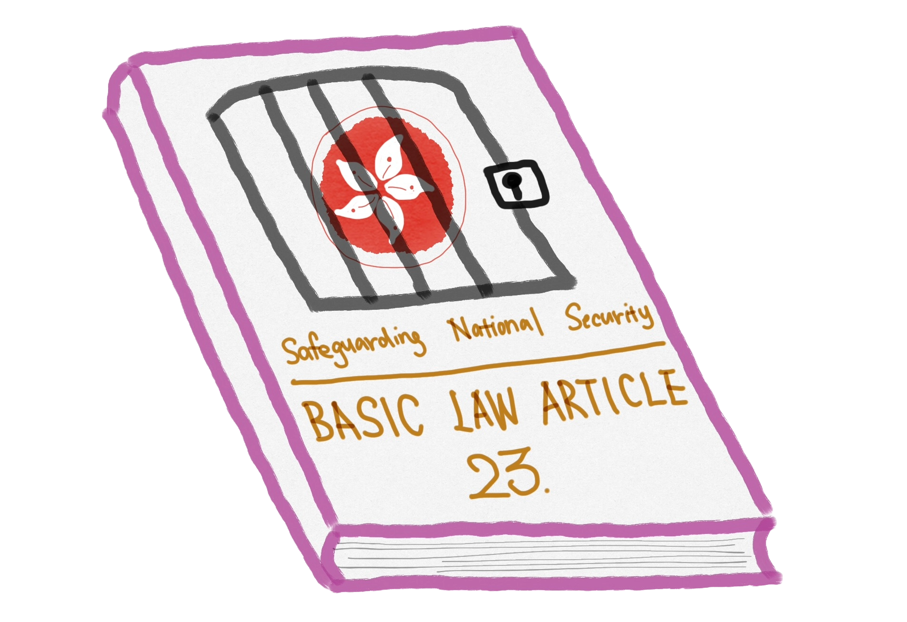

If you don’t like John Lee – oops, don’t say it – you might be sentenced to years of imprisonment.
Last Saturday on March 23, a new national security law – known as Article 23 – took effect in Hong Kong, a
city once known for its bustling streets but also vibrant civil liberties.
The legislative process unfolded rapidly, concluding in just 50 days as testament to the changing political
climate. City’s Chief Executive John Lee (yes, the guy you shouldn’t criticize without scruples) said the
law “accomplished a historic mission, living up to the trust placed in us by the Central Authorities.”
The law, introduced to complement Beijing’s 2020 mandate, criminalizes a range of political offenses,
including treason and insurrection, with penalties extending to life imprisonment. With much uncertainty and
ambiguity, the law makes city’s political opposition and civil society now find themselves in a weakened
state, overshadowed by the expansive reach.
- What's inside Article 23 -
The devil is in the details
The legislation of Article 23 is a complement of the Beijing-imposed national security law enacted in 2020,
and
fill in other gaps in the city’s legal framework on national security.
The law itself, with a combination of both mainland Chinese and colonial-era British legal traditions, is
divided into five main offenses: treason, insurrection, state secrets and espionage, sabotage, and external
interference.
The most worrying part of the new law, as Amnesty
International
pointed out, is the direct copy of its
definition of “national security” from mainland China, where it is a vague concept covering “major interests
of the state” – which means basically everything.
In addition, the law also introduces the definition of “state secrets”, which is extremely broad and can
relate to any economic, social, technological or scientific developments – even when they have never been
officially classified as secrets. This is very similar to the notorious “catch-all” provisions contained in
section 2 of the now-replaced Official Secrets Act in the UK.
Even though the bill contains a defence for disclosing state secrets based on public interest, this still
makes society worried about the chilling effect on whistle-blowers.
Moreover, under the new law, the Chief Executive has the absolute authority to certify whether any material
involves state secrets. So again - pretty much anything could be considered a “state secret”.
- The Timeline -
It took a quarter-century for the bill to be enacted
The enactment of laws under Article 23 has been a contentious issue, which has taken over 20 years and
witnessed the shift of city’s political landscape.
When Hong Kong was handed over to China in 1997, the Basic Law was established to govern the city, promising
a high degree of autonomy under the principle of "one country, two systems."
While Article 23 of the Basic Law mandates Hong Kong to enact its own national security laws, the central
government took a rather mild attitudes towards the legislation.
But everything went wrong in 2002.
And yes, Regina Ip who failed in 2003, is still there. The now senior legislator of Hong Kong told CNN that
the legislation is "a task that has been outstanding for 27 years".
"We're not bowing to the pressure of China", said Ip. "it's our legal, constituinal and moral
responsibility to safegurd national security."
While the Hong Kong government is trying to persuade investors that the city is still going to be the
financial hub, harms have already been done. The Department of State released a statement on February 28
expressing its concern over the undermining of the “One Country, Two Systems” framework.
"We are particularly concerned by Hong Kong authorities' proposal to adopt broad and vague definitions of
state secrets and external interference," said the spokesperson. "That could be used to eliminate dissent
through the fear of arrest and detention."
- The Heritage -
How Article 23 alerted Hong Kong's no-longer-existing civil society
The June Fourth massacre in 1989 made many Hong Kong residents disappointed with the CCP and the future of
Hong Kong. After the handover in 1997, marches were organised annually on July 1 – the handover anniversary
– by the Hong Kong Alliance in Support of Patriotic Democratic Movements of China (支聯會), a pan-Chinese civil
rights organisation that demands the Chinese government to redress the student movement in 1989 and
accelerate democratisation.
However, the Article 23 legislation attempt in 2003 made Hong Kong people realize that the city’s freedom is
at immediate jeopardy. While the public was worried civil rights and liberties would be adversely affected,
a more local-oriented organisation, the Civil Human Rights Front (民陣), was formed by grassroots and
pro-democracy politicians.
Since 2003, the annual march has been an important event for Hong Kong’s civil society to demand for
democracy and universal suffrage. The number of people participating in the march and the topics discussed
also directly reflect citizens’ perceptions of the government’s performance.
"The legislation of Article 23 showed Beijing's changing attitude on Hong Kong and the 'One Country, Two
Systems'," said Johnny Lau, a senior news commentor. "The 1 July march in 2003 greatly alarmed Beijing,
leading mainland Chinese authorities to send a significant number of people southward to
investigate. They attributed Hong Kongers' opposition to Article 23 to a lack of 'emotional
reunification'."
Press freedom has always been an advantage that differentiates Hong Kong from the mainland and is also the
pillar of civil society that Hong Kong people were once proud of. However, Article 23 means it's
in jeopardy.
Radio Free Asia is known as the first outlet to end its Hong Kong business after the bill was passed.
"Their broad and vague definitions make it hard for journalists to make sound judgement on what could
constitute a threat to national security," said Hong Kong Journalists Association. "This could create a
chilling effect, deterring the press from
doing relevant reporting due to legal concerns."